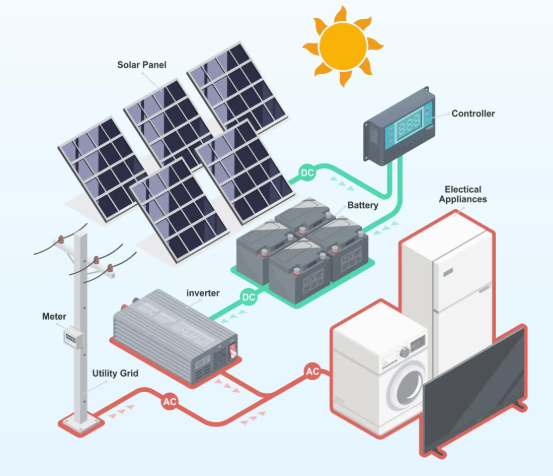
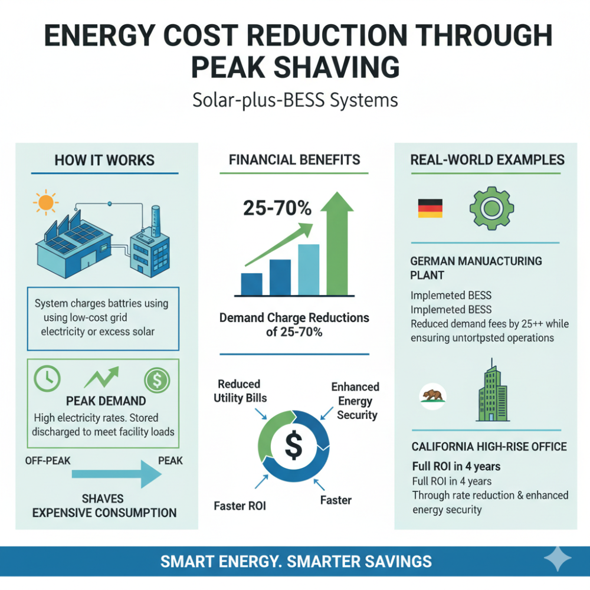
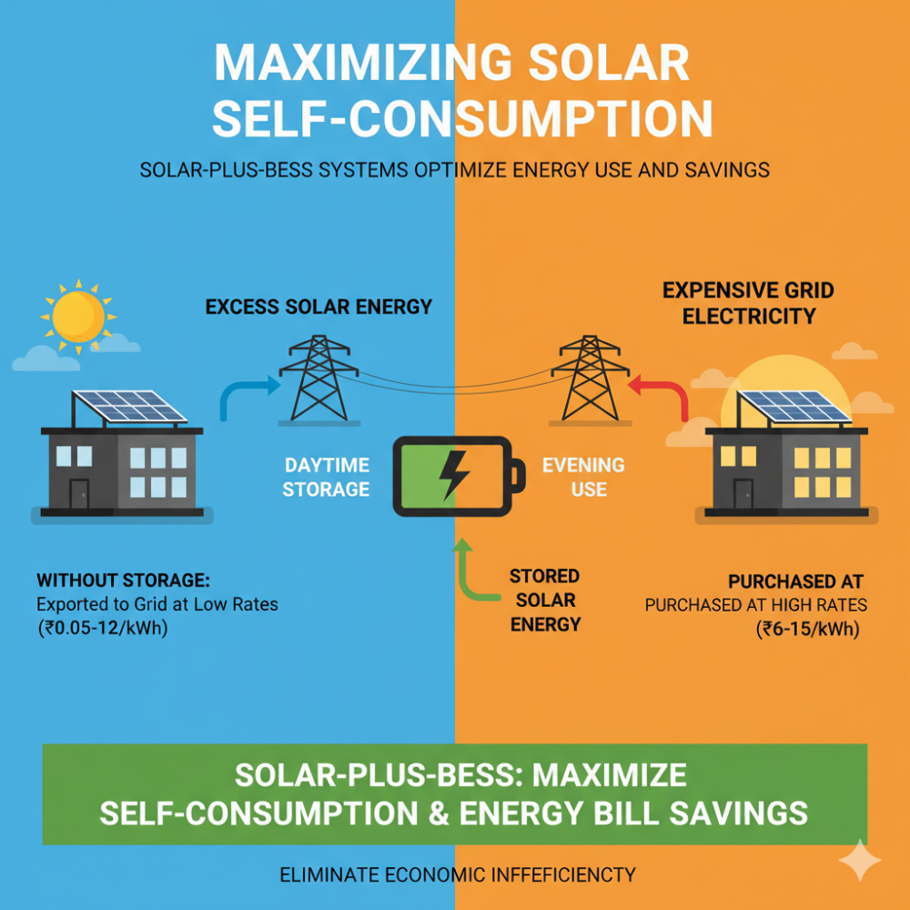
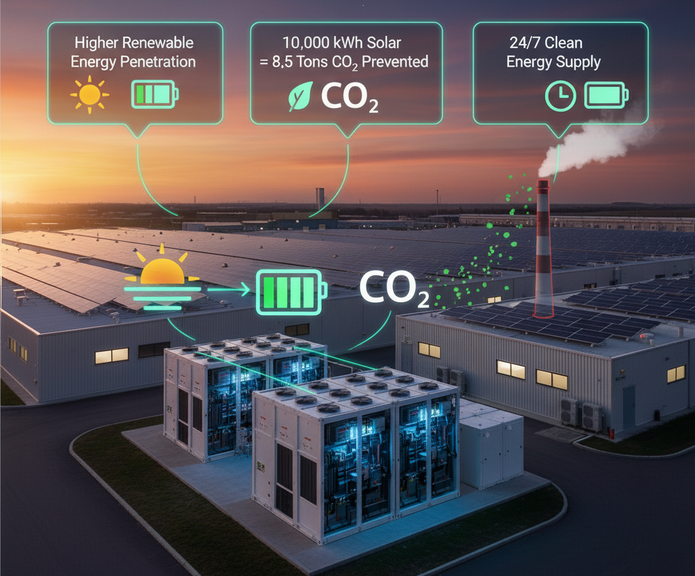
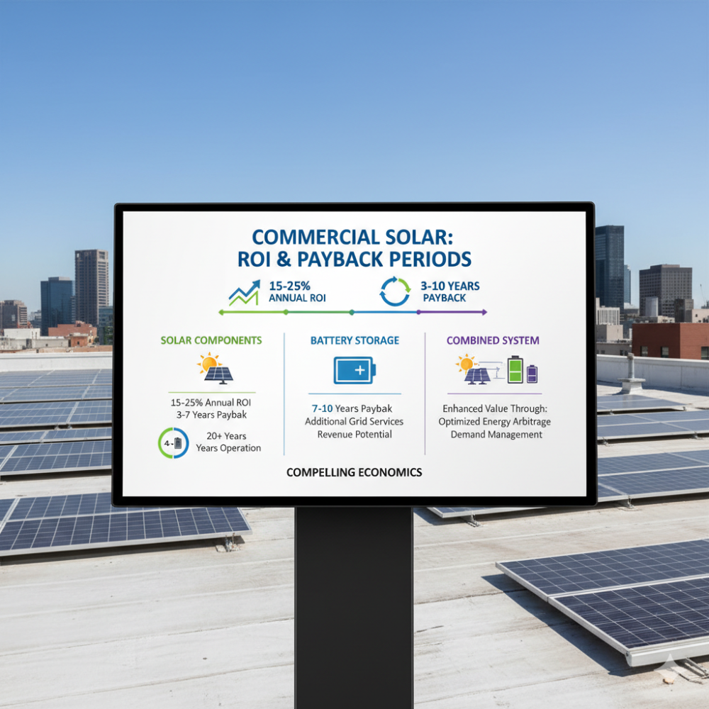
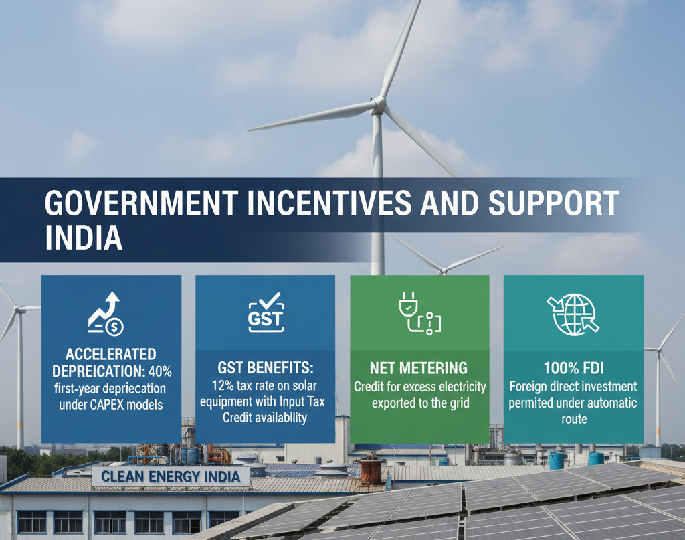
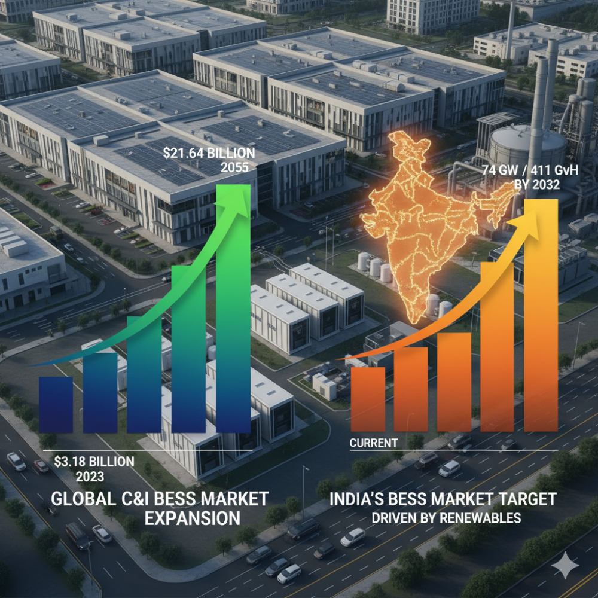
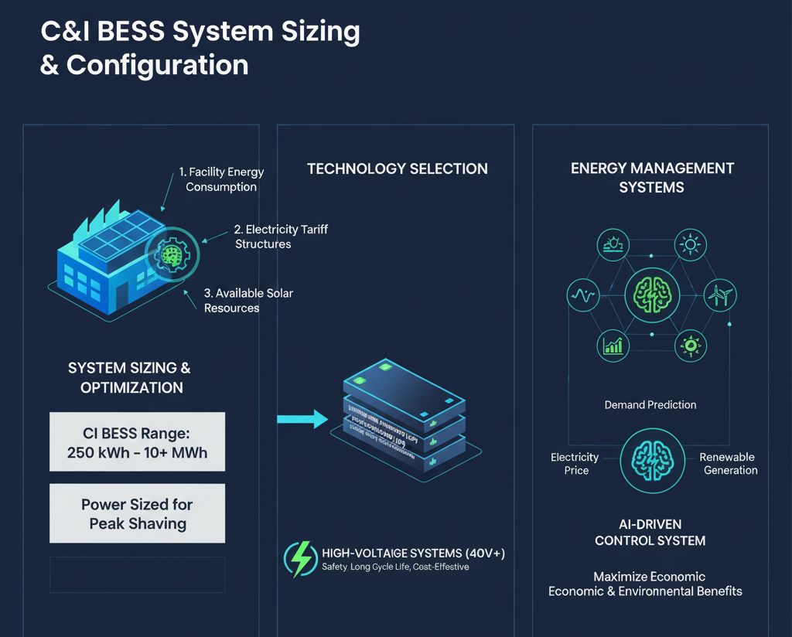

Commercial and industrial (C&I) businesses are increasingly turning to solar-plus-battery energy storage systems (BESS) as a strategic solution to simultaneously reduce their carbon footprint and slash energy costs. This powerful combination transforms intermittent solar generation into a reliable, dispatchable energy asset while delivering substantial financial returns and environmental benefits.
The C&I Energy Challenge
C&I consumers face unique energy challenges that make solar-plus-BESS solutions particularly attractive. Industrial electricity tariffs in India are among the highest globally, with businesses often spending 5-20% of their operational expenses on electricity costs. These elevated rates stem from cross-subsidization policies where C&I consumers effectively subsidize below-cost electricity for residential and agricultural sectors.
Beyond cost pressures, C&I facilities typically experience significant demand variations throughout the day, leading to expensive peak demand charges that can account for 30-70% of total energy bills. Additionally, growing sustainability mandates from initiatives like India's Science Based Targets (with over 200 Indian companies participating) and the EU's Carbon Border Adjustment Mechanism (CBAM) are driving businesses to adopt renewable energy solutions.

How Solar + BESS Creates Value
Energy Cost Reduction Through Peak Shaving
The primary financial benefit of solar-plus-BESS systems comes from peak shaving capabilities. During off-peak hours, the system charges batteries using low-cost grid electricity or excess solar generation. When electricity rates spike during peak demand periods, stored energy is discharged to meet facility loads, effectively "shaving" expensive peak consumption from utility bills.
A commercial facility can achieve demand charge reductions of 25-70% through strategic peak shaving. For example, a German manufacturing plant implementing BESS for peak shaving reduced demand fees by over 25% while ensuring uninterrupted operations. Similarly, a California high-rise office building achieved full return on investment in just 4 years through rate reduction and enhanced energy security.

Maximizing Solar Self-Consumption
Without storage, excess solar energy generated during peak sunlight hours is typically exported to the grid at low feed-in tariff rates (₹0.05-0.12 per kWh) while businesses must purchase expensive grid electricity (₹6-15 per kWh) during evening hours. Solar-plus-BESS systems eliminate this economic inefficiency by storing excess daytime solar generation for use during high-rate periods, maximizing self-consumption and energy bill savings.
Backup Power and Resilience
BESS provides critical backup power during grid outages, ensuring business continuity for operations that cannot afford downtime. This capability is particularly valuable for manufacturing facilities, data centers, healthcare facilities, and other mission-critical operations.

Carbon Footprint Reduction Benefits
Enabling Higher Renewable Energy Penetration
By addressing solar intermittency, BESS enables businesses to achieve higher renewable energy penetration in their energy mix. Studies indicate that using 10,000 kWh of solar electricity can prevent approximately 8.5 tons of CO₂ emissions. The storage component ensures this clean energy can be utilized even when the sun isn't shining, maximizing emissions avoidance.

Reducing Grid Carbon Intensity
BESS systems contribute to carbon reduction through multiple mechanisms:
- Peak shaving reduces reliance on "peaker"plants: During high-demand periods, utilities often activate fossil fuel-powered peaker plants. By reducing peak demand through stored energy discharge, facilities help minimize the activation of these high-emission generators.
- Enabling grid-scale renewable integration: Commercial BESS installations support overall grid stability, facilitating higher renewable energy penetration across the electricity network.
- Minimizing transmission losses: Storing energy near consumption points reduces transmission and distribution losses, decreasing the total generation required to meet energy needs.
Supporting Carbon-Aware Energy Management
Advanced BESS control systems can optimize operation based on grid carbon intensity, not just electricity prices. During periods when the grid has high renewable penetration and low carbon intensity, batteries charge preferentially. When carbon intensity is high, stored clean energy is discharged, minimizing the facility's carbon footprint.
Financial Returns and Economics
ROI and Payback Periods
Commercial solar installations typically deliver 15-25% annual ROI, with payback periods of 3-7 years for solar components and 7-10 years for battery storage. The combination creates compelling economics:
- Solar component: 4–5-year payback with 20+ years of operation
- Battery component: 7–10-year payback with additional grid services revenue potential
- Combined system: Enhanced value through optimized energy arbitrage and demand management

Revenue Diversification
Modern C&I BESS installations can generate revenue through multiple value streams:
- Energy cost savings: Primary benefit from avoided electricity purchases
- Demand charge reduction: Significant savings from peak shaving
- Grid services: Participation in demand response programs and virtual power plants
- Renewable energy certificates: Additional revenue from clean energy generation
- Carbon credits: Potential future revenue from verified emissions reductions
Government Incentives and Support
India offers several financial incentives for C&I renewable energy adoption:
- Accelerated depreciation: 40% first-year depreciation under CAPEX models
- GST benefits: 12% tax rate on solar equipment with Input Tax Credit availability
- Net metering: Credit for excess electricity exported to the grid
- 100% FDI: Foreign direct investment permitted under automatic route

Market Growth and Applications
Explosive Market Growth
The global C&I BESS market is experiencing rapid expansion, projected to grow from $3.18 billion in 2023 to $21.64 billion by 2035. India's BESS market specifically is targeting approximately 74 GW/411 GWh of storage capacity by 2032, driven by aggressive renewable energy scale-up.

Key Application Sectors
- Manufacturing and Industrial Facilities: Large energy consumers benefit most from demand charge reduction and backup power capabilities. Peak shaving can reduce energy costs by up to 80% in high-demand charge markets.
- Data Centers and Critical Infrastructure: Facilities requiring uninterrupted power supply leverage BESS for both cost optimization and resilience. These applications often justify premium system costs due to the high value of avoided downtime.
- EV Charging Infrastructure: Solar-plus-BESS enables fast-charging stations to operate efficiently without overwhelming local grid infrastructure. The system charges batteries during off-peak hours and provides rapid charging capability on demand.
- Commercial Buildings: Office complexes, retail centers, and mixed-use developments utilize solar-plus-BESS for energy cost management and sustainability credentialing.
Implementation Considerations
System Sizing and Configuration
Optimal system design requires careful analysis of facility energy consumption patterns, local electricity tariff structures, and available solar resources. C&I BESS systems typically range from 250 kWh to several MWh, with power ratings sized to handle peak shaving requirements.
Technology Selection
Modern C&I installations predominantly use lithium iron phosphate (LFP) batteries due to their safety characteristics, long cycle life, and cost-effectiveness. High-voltage systems (400V+) are preferred for their efficiency and scalability advantages.

Energy Management Systems
Advanced control systems are essential for optimizing multiple value streams. AI-driven energy management systems can predict demand patterns, electricity prices, and renewable generation to maximize economic and environmental benefits.
Future Outlook
The convergence of declining battery costs, supportive policies, and growing sustainability mandates positions solar-plus-BESS as a transformative solution for C&I energy management. With demand for C&I renewable energy outstripping supply by approximately 10 GW in 2024, early adopters can secure competitive advantages through reduced energy costs, enhanced operational resilience, and improved sustainability credentials.
As India progresses toward its 500 GW non-fossil fuel capacity target by 2030, C&I consumers adopting solar-plus-BESS solutions will play a pivotal role in the nation's energy transition while capturing substantial economic and environmental benefits. The technology represents not just an energy solution, but a strategic business investment that delivers measurable returns across financial, operational, and sustainability dimensions.